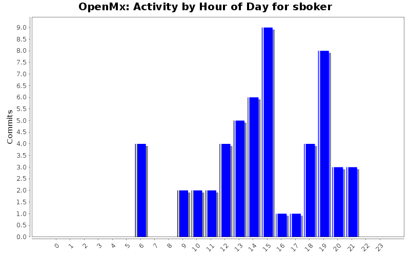
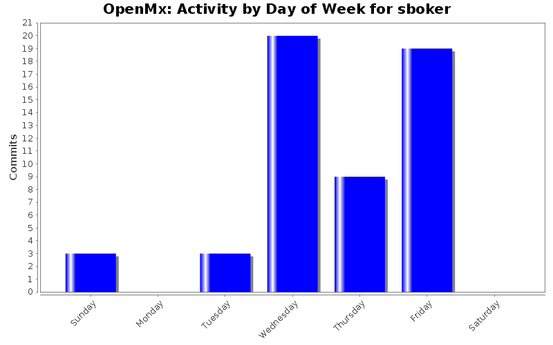
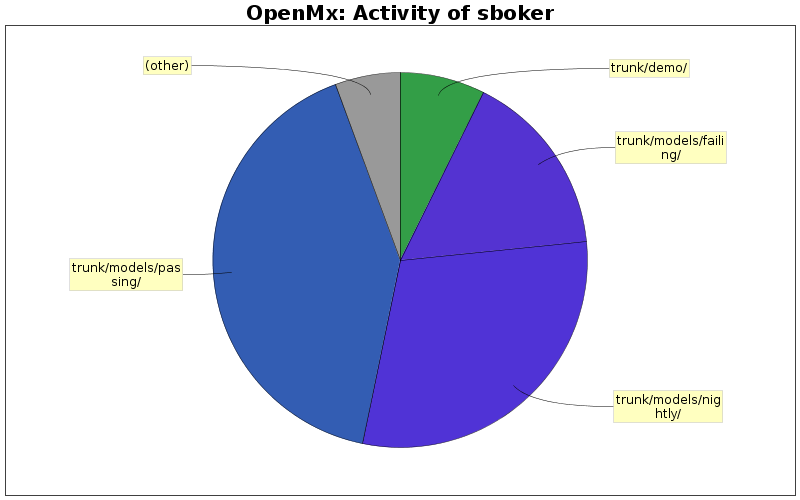

| Directory | Changes | Lines of Code | Lines per Change |
|---|---|---|---|
| Totals | 54 (100.0%) | 1894 (100.0%) | 35.0 |
| trunk/models/passing/ | 14 (25.9%) | 780 (41.2%) | 55.7 |
| trunk/models/nightly/ | 5 (9.3%) | 565 (29.8%) | 113.0 |
| trunk/models/failing/ | 12 (22.2%) | 304 (16.1%) | 25.3 |
| trunk/demo/ | 13 (24.1%) | 139 (7.3%) | 10.6 |
| trunk/src/ | 8 (14.8%) | 62 (3.3%) | 7.7 |
| trunk/demo/ExamplesH/ | 1 (1.9%) | 44 (2.3%) | 44.0 |
| trunk/inst/npsol/osx/ | 1 (1.9%) | 0 (0.0%) | 0.0 |

This model simulates multilevel data with 2 levels and random intercepts only, fits it with lme(), fits it with a naive wide format multilevel OpenMx model and then checks to make sure the fixed parameters, random intercept variance and error variance all match the lme estimates.
134 lines of code changed in 1 file:
Added the RAM-3Factor* models to the nightly testing suite.
566 lines of code changed in 6 files:
Add four test case models that exercise the solve(I-A) speedup.
1 lines of code changed in 4 files:
Forgot to put the require(nlme) into MultilevelUniRandomSlopeInt.R
1 lines of code changed in 1 file:
Add the univariate multilevel random slopes and intercepts model to the tests.
This model requires the library "nlme"
104 lines of code changed in 2 files:
Remove dependency on the psyc package from three tests in models/passing.
1 lines of code changed in 3 files:
Added tests for standard deviations and modified StandardErrorsSimple.R to be correct.
218 lines of code changed in 5 files:
Add an example of a model that does definition variable indexing.
85 lines of code changed in 1 file:
Triple-fat npsol binary: PPC, i386 and 64 bit x86_64
0 lines of code changed in 1 file:
Fixes to likelihood vector calculation. Moved TwinAnalysisLikelihoodVector.R to passing
214 lines of code changed in 3 files:
Adding first test that uses FIML likelihood vector
212 lines of code changed in 1 file:
Improve error messages for FIML row likelihood calculations
11 lines of code changed in 3 files:
Updated demo index to include the two demos from the front page of the website.
2 lines of code changed in 1 file:
Changed to data() and "semicolon delimited variables" csv file.
5 lines of code changed in 2 files:
Edited front page demos to include data() call instead of read.csv()
2 lines of code changed in 2 files:
Moved demoOneFactor.csv to the data directory
0 lines of code changed in 1 file:
Added demo scripts and data file from website front page to the demo directory.
55 lines of code changed in 3 files:
Edited SimpleRegression_*.R models from Ryne and bivSatS2.R to conform to the changes we discussed in the 7/24 meeting.
145 lines of code changed in 3 files:
Fixed definition variables model such that estimates can be computed. Model is now passing!
11 lines of code changed in 2 files:
Changes made from group debugging session
52 lines of code changed in 5 files:
(4 more)